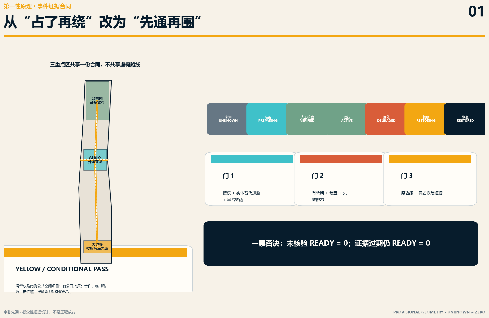
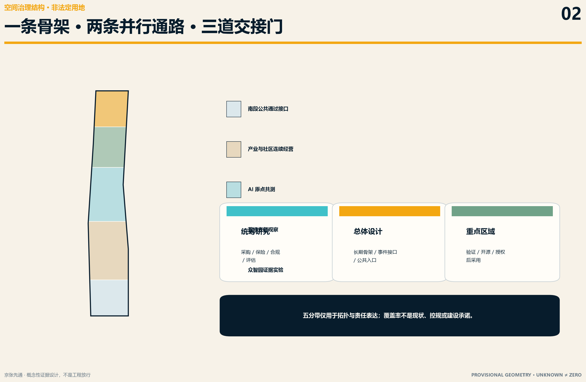
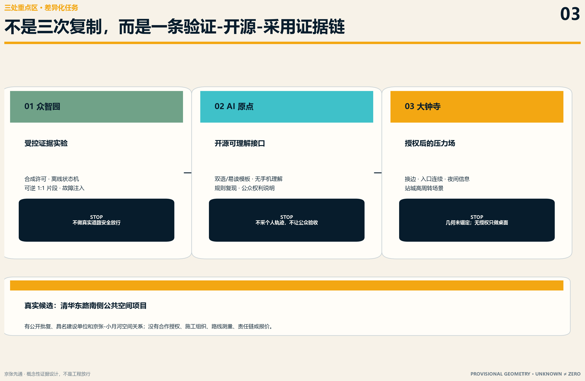
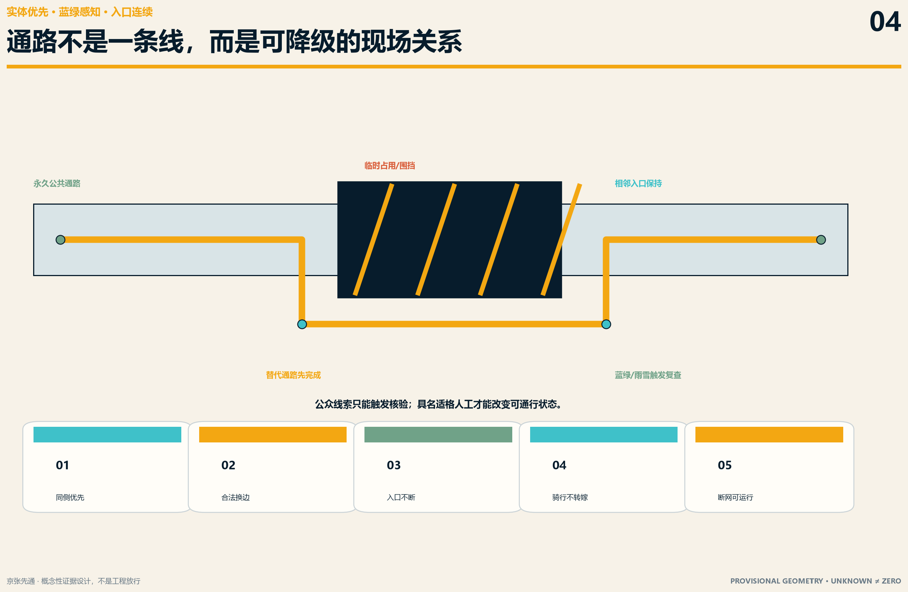
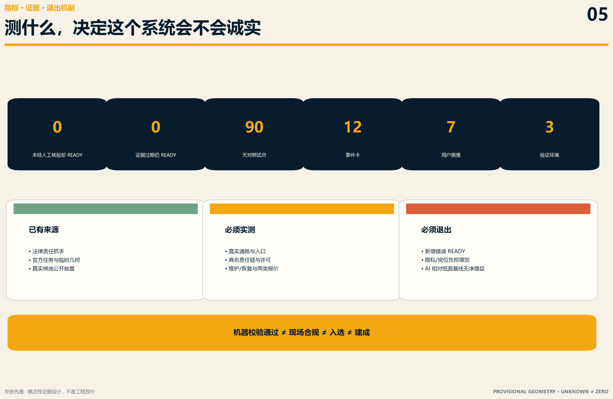

京张先通 / PASSAGE BEFORE BARRIERS
把建设期公共通路写成占用前准入、运行中退化和期满恢复的证据合同：先有经授权核验的替代通路，再允许形成围挡或占用。
京张先通 / PASSAGE BEFORE BARRIERS
先通，再围。 一条公共路线只要有一个不能通过的临时断点，对部分人就等于整条路线失效。京张先通不把 AI 做成导航 App，而把城市更新施工期的公共通路写成一份可核验、会过期、能退化、必须恢复的合同。
设计依据与资料清单
本方案依据百年京张 AI 创新带官方公告、面向智能体任务书、仓库场地包和来源登记工作，回应 43.6 平方公里统筹研究、约 11.4 平方公里总体设计及三处重点区域的完整任务 来源 来源 标准。方案是 AI 生成的开放共创建议，不替代法定规划、工程设计、交通组织、无障碍专业审查、施工许可、政府审定或公众参与。
提交包使用的总体与三处重点区几何均来自仓库临时粗略 polygon。它们只用于 intake 讨论、空间关系表达和复算，不是官方红线、道路红线、项目边界、权属、现状或施工依据 来源 来源 空间数据。大钟寺是任务书中的片区名称；PROV-KEY-003 仍是未锚定的 provisional rectangle，不能自行平移到站点。官方/canonical geometry 发布后，所有图层、指标、图件、PDF 与 HTML 必须整体重算。
国家《无障碍环境建设法》要求临时无障碍设施符合工程建设标准；临时占用无障碍设施时应公告、设置护栏/警示/信号、采取必要替代措施并在期满后恢复 来源 标准。北京条例进一步连接经批准临时占用、替代措施、恢复功能与责任 来源 标准。这些法律只证明公共问题和责任抓手存在，不证明任何京张现场已经违法、合格、获批或适合本方案。

资料用途、访问时间、许可与限制在 sources.json 登记；未知条件在 assumptions.json 保持可见。参与者自采来源没有因为进入投稿包就获得仓库中央批准；空间与工程结论仍须回到适用的 official/canonical 数据 来源 来源。
第一性原理：最小公共问题与最小服务原子
谁真正受损
围挡、维修、活动或管线施工可能把原有步行、轮椅、盲杖、婴儿车、骑行和到达路径突然切断。受影响者包括残障人士、老年人、儿童与照护者、临时受伤者、携带行李者、夜班人员、配送劳动者、访客和不使用智能手机者。失败代价不是“体验欠佳”，而可能是被迫进入车行空间、无法到站或进门、额外绕行、放弃出行或受到伤害。
没有 AI 时必须先成立
最小服务只有五步：
1. 占用方提交适用授权、边界、期限、责任人和恢复范围； 2. 占用发生前先布设实体替代通路、纸面公告与人工联系方式； 3. 由具有相应职责与能力的人现场核验，未经核验不得显示“可通行”； 4. 运行期按有效期、人工检查和降级路径维持；关键证据或物理条件失效即撤销可用状态； 5. 占用结束后恢复原功能，由责任主体具名签核并保留最小公开证据。
纸面表、实体导向、电话链、人工踏勘和恢复单就是非 AI 基线。AI 只可解析公开或授权文件、发现缺项/过期、草拟中英双语及易读公告、把矛盾送交人工复核。AI 不批准占道，不判断工程安全或无障碍合规，不控信号/围挡/设备，不指挥交通或应急，不维修、不检验、不放行、不自行恢复 空间数据。
三层范围工作框架
总体概念是“一条长期骨架、两套并行通路、三道交接门”。永久公共通路是第一通路；任何更新、维修或活动与其相交时，必须先完成第二通路。三道门分别控制占用前的授权与核验、运行中的有效期与退化、占用后的恢复与签核 深度 深度。
| 层级 | 需要解决的问题 | 京张先通的空间回答 | 当前证据边界 |
|---|---|---|---|
| 统筹研究范围 | 多年建设更新如何不把可达性成本转嫁给公众 | 把建设期连续性变成采购、工程、保险、合规与公开评估的共同接口 | 只提出制度与产业协同，不声称已签约 |
| 总体设计范围 | 京张公园、东西联系、站点和公共入口如何在建设期保持连续 | 识别概念性“不得无替代中断”的长期骨架与事件接口 | 临时几何只表达拓扑，不定位真实断点 |
| 三处重点区域 | 研发、开源采用与高流量界面如何形成闭环 | 众智园验证规则与组件；AI 原点验证公开信息；大钟寺须在授权后才测高流量到达 | 三处均是任务角色，不是既有设施或政府安排 |

三区两翼协同回路
- 众智园 AI 自主创新加速区：受控合成文件、缺项检测、离线状态机、临时护栏/导向/坡道概念组件的验证候选；不做真实道路安全放行。
- 北京 AI 原点社区：开源规则、双语与易读公告、无手机可理解性、开发者复现和公众权利说明的验证候选；不采集个人轨迹。
- 大钟寺 AI 产业集聚区：只有在真实站城/公共空间项目、管理方、施工方和专业许可到位后，才作为高周转到达界面的受控候选；当前保持 UNKNOWN。
- 中关村科技服务翼：形成交通工程、无障碍、法务、保险、采购、监理、评估与开源软件的服务包，把“负责任”转成可采购交付物。
- 小月河场景赋能翼：在授权条件下验证雨雪、夜间、绿地养护、慢行冲突和生态敏感界面；不把公园公众变成免费验收员。
统筹研究范围产业与未来城市研究
名称、视觉识别与公共语言
主名称“京张先通”表达顺序责任，而非承诺全线已经畅通；英文 PASSAGE BEFORE BARRIERS 直接说明“替代通路先于障碍”。命名系统包括：
- 先通证：占用前的证据摘要，不是行政许可证；
- 失效钟：公开下一次人工复核/证据失效时点；
- 交接门：开占、运行和复原三次人工签核；
- 复原签：原功能恢复的具名证据，不是 AI 生成的完成标记。
Logo 方向是一条连续琥珀色路径穿过两段错开的深蓝围挡：路径不断，围挡服从路径。不得直接使用未经授权的铁路图像、企业商标、人物肖像或字体。视觉状态同时使用文字、图形和纹理，不能只靠红黄绿色觉编码 来源。
六个全球方法案例
案例只用于比较方法，不把国外法规、尺寸、机构或绩效搬到北京。
| 案例 | 可借鉴方法 | 不移植内容 |
|---|---|---|
| 伦敦 TfL 临时交通管理手册 | 施工前比较行人风险；连续可探测导向；标志不能成为唯一保障；运行中观察 | 英国标志、尺寸与 TLRN 权限 来源 |
| 美国 PROWAG | 替代步行通路必须端到端可用，临时并不取消基本可达特征 | 美国法定标准和数值 来源 |
| 纽约 NYC DOT Street Works | 把临时步行道、占用许可、检查和路面恢复放进同一街道工程链 | 纽约许可名称和机构 来源 |
| 新加坡 LTA Work Zone | 许可程序、交通控制计划和恢复要求相互挂接 | 新加坡代码与审批权限 来源 |
| 多伦多 TS 1.00 | 承包商维护受保护、连续、端到端可达的临时通路，明确日常维护责任 | 加拿大尺寸与 AODA 口径 来源 |
| 新南威尔士 Traffic Control at Work Sites | 维持既有过街、提供近似替代、照明/安保和骑行条件进入交通管理计划 | 澳大利亚技术要求 来源 |
京张的创新不在复制一个 App，而在形成一套可跨项目使用的“事件—证据—责任—失效—恢复”公共合同。产业价值由减少漏项、减少错误 READY、降低公众绕行与沟通成本来验证，不能用传感器数量、模型调用量、投资额或虚构企业名单证明。
总体设计范围城市更新与控规深度城市设计
空间结构与用地
方案把临时总体边界中的概念空间划分为五类连续性研究分带：南段公共通过接口、产业与社区连续经营、AI 原点共测、蓝绿恢复观察、众智园证据实验。它们是叙事和拓扑检查，不是法定用地调整；land_use.geojson 的覆盖率只证明提交图层闭合，不证明现状或控规 空间数据 指标 标准。
空间控制不是画一条虚构“全线无障碍路线”，而是规定任何真实项目与长期骨架相交时必须生成五个界面：占用前公告面、同侧优先的替代通路面、换边/过街决策面、相邻入口连续面、期满恢复面。真实线路、道路红线、坡度、宽度、照度、排水、过街和站点组织在正式测绘与专业文件到位前均为 UNKNOWN 深度。
用地、建筑规模与拆改留方案
方案不以新增大型建筑解决建设期问题。概念建筑图层只表达三个可逆的室内/半室内支撑界面：受控验证台、公开说明台和责任交接台；不是现状建筑，也不是拆改留或建设规模结论 空间数据 指标 标准。
真实建筑产权、保留/改造/拆除、容积率、高度、密度、退线、消防疏散和文保条件均保持 UNKNOWN 深度 深度。
施工期公共空间构件采用可逆、低耗、易维护策略：实体护栏/连续边缘、平整通路、换边提示、纸面状态、具名联系人和失效时间。具体材料、尺寸、固定方式与安全等级必须由适用专业设计确定；本方案的组件库不构成标准图集或采购技术规格。
重点区域详细设计
1. 众智园：受控连续性验证场
不占真实公共道路，先以合成许可、虚构角色和可逆 1:1 片段验证文档缺项、状态退化、实体导向、断网、标志缺失和恢复签核。测试结果只证明原型流程，不证明任何真实道路可用 空间数据。
2. 北京 AI 原点社区：开源可理解接口
把事件状态、证据有效期、投诉/联系入口、非数字地图与中英双语易读模板开放为可复现公共知识。无障碍使用者、老年人、照护者与现场工作人员只能在获得同意的受控环境中测试“信息能否理解”，不承担工程验收 空间数据。
3. 大钟寺：授权后的压力场
面向站点、商业、办公与生活入口的高周转到达界面，研究换边、门前连续、骑行冲突和夜间信息。但 PROV-KEY-003 尚未锚定；真实资产、道路、站口、施工计划、运营主体和通路能力均 UNKNOWN。未取得书面场地授权、适用许可、现场基线和专业核验前，只做桌面情景，不落真实点位 空间数据。

真实优先对接候选，不是已选试点
北京市发改委批复的清华东路南侧公共空间改造提升项目，建设单位公开为学院路街道办事处，西接京张铁路遗址公园、东至小月河绿廊；市政府公开说明还记录了站前停车秩序与人行/自行车通行不连贯问题，并称项目计划 2026 年内开工 来源 来源。这使它成为优先对接候选，但目前没有施工组织、占道方案、施工/监理主体、路线测量、试点授权或报价。方案不得把新闻四至、效果图或临时 polygon 转成其工程红线。
AI 创新生态、人才画像与 AI+ 场景
七类用户画像
| 人群 | 核心任务 | 不能转嫁给他们的责任 |
|---|---|---|
| 轮椅/助行器使用者 | 端到端通过、转弯、过街和入口连续 | 证明临时设施合规 |
| 视障/低视力使用者 | 连续可探测边缘、非视觉信息、无突出危险 | 用自身风险测试工程安全 |
| 老年人、儿童与照护者 | 低认知负担、短绕行、可停留、无手机可理解 | 安装维护与现场指挥 |
| 骑行者与配送劳动者 | 明确下车/合流/绕行关系，避免突入行人和机动车流 | 补齐施工交通组织 |
| 周边居民、学生和访客 | 预先知道变化、入口不断、可联系责任方 | 持续上传定位/轨迹 |
| 施工、监理与现场维护人员 | 一份可执行检查表、清楚交接和失效条件 | 为平台错误状态背书 |
| 道路/设施管理、审批与应急角色 | 可核验文件、权限内处置、恢复证据 | 被 AI 替代法定或专业判断 |
十二张事件合同场景卡
所有场景共用同一状态合同，不是十二个互不相干的 AI 功能 空间数据。
| 卡 | 事件与主要用户 | 非 AI 主路径 | AI 可做 | 人工门/退化触发 | 验证指标 |
|---|---|---|---|---|---|
| S01 计划性人行道占用 | 日常行人、轮椅、门店入口 | 许可包、实体通路、纸面图、开闭检查 | 文件缺项与到期提醒 | 专业核验后才 VERIFIED；阻断即 DEGRADED | 未核验 READY=0 |
| S02 紧急抢修 | 夜间居民、应急人员 | 现场安全优先、人工警戒、获批替代安排 | 整理公开状态草稿 | AI 不发应急指令；授权主体决定关闭 | 错误开放=0 |
| S03 站前广场施工 | 乘客、携行李者、骑行者 | 换边点、站口与疏散关系人工确认 | 发现版本冲突 | 站点/交通/施工角色共同证据缺一即 UNKNOWN | 入口连续证据率 |
| S04 绿地与绿道养护 | 跑步者、儿童、视障者 | 围护、同侧替代、无手机提示 | 草拟易读公告 | 生态/园林/设施责任按权属确认 | 误入事件、公告理解率 |
| S05 临时活动占用 | 访客、居民、摊位/活动运营 | 活动许可、可撤构件、清场恢复单 | 版本/有效期检查 | 活动结束未恢复即 RESTORING | 按期恢复签核率 |
| S06 管线开挖 | 行人、骑行者、施工人员 | 通路与坑槽物理隔离、人工巡查 | 对照证据清单 | 安全与交通检查失败立即关闭/退化 | 危险线索至撤态时间 |
| S07 雨雪积水 | 轮椅、推车、老年人 | 人工天气后复查、清理、替代线 | 提醒复查，不判可用 | 排水/防滑证据过期即 DEGRADED | 天气后有效复查率 |
| S08 夜间照明失效 | 夜班人员、访客 | 现场照明和联系人，不依赖手机闪光 | 发现巡查逾期 | 照明核验缺失即撤销 ACTIVE | 过期仍显示可用=0 |
| S09 行人—骑行冲突 | 骑行者、儿童、配送员 | 物理分流/下车规则、现场观察 | 聚合冲突线索分类 | 交通专业者决定组织，不由模型控流 | 近失误用、人工接管时间 |
| S10 可探测边缘缺失 | 视障者、施工维护 | 连续实体边缘与人工触检 | 检查表漏项提示 | 公众线索只触发核验，不能自证修复 | 线索—核验—修复闭环率 |
| S11 相邻入口中断 | 居民、学校/单位、商户 | 逐入口清单、临时门槛/引导专业处理 | 对照施工阶段与入口清单 | 权属/消防/运营未确认即 UNKNOWN | 必要入口保持/替代证据率 |
| S12 占用期满恢复 | 全体公众、设施管理人 | 清场、原功能复核、具名复原签 | 发现逾期和文件矛盾 | 适格主体证据后才 RESTORED | 按期恢复、假恢复=0 |
三类产业测试验证场景
1. 众智园合成证据实验：用虚构项目、脱敏模板和故障注入验证规则检查器；不得使用真实未公开施工资料。 2. AI 原点受控 1:1 演练：在书面许可的非道路场地搭建可逆通路片段，比较纸面流程与 AI 辅助流程；不宣称工程验收。 3. 真实项目授权影子/有限试点：只有真实管理方、施工/活动方、专业角色、许可、保险和发布范围齐全才进入；否则保持影子观察，不影响现场决策。
AI 净增益只看四件事：是否减少关键证据漏项、是否缩短人工整理时间、是否没有新增错误 READY、是否没有增加隐私与岗位负担。净价值不成立，AI 退出而非 AI 通路合同保留。
交通、轨道、市政与公共服务设施
交通层坚持“同侧连续优先、合法换边、入口不断、骑行不甩锅给行人”的设计顺序。roads.geojson 只表达概念性长期骨架，不是现状道路、施工便道或红线 空间数据 标准。轨道站点、路口信号、施工车辆、公交站、消防疏散和应急交通都必须由相应专业主体处理，AI 不控制。
市政和新型基础设施采用最低技术基线：可打印事件编号、纸面状态、具名电话、人工检查时间、离线导向。数字层可以是本地静态台账和确定性规则器，不需要摄像头、人脸、轨迹、持续定位或云端数字孪生。真实管线、供电、照明、排水、网络与设备维护能力未有公开证据，全部保持 UNKNOWN 深度。
蓝绿空间、公共空间与城市风貌
永久蓝绿空间不是施工的剩余地，而是长期公共骨架。施工期设计至少要处理树池/绿地边缘、雨后积水、夜间暗区、慢跑与骑行、儿童停留、视障可探测边界和清洁维护。green_space.geojson 与 public_space.geojson 只表示概念研究界面 空间数据 空间数据。
其比例来自临时提交几何，不能解读为新增绿地、现状开放空间或项目承诺 指标 指标。
公共空间组件库包括：连续实体边缘、可逆防护、平整通路、低位/大字/触觉兼容公告面、换边前置提示、纸面地图、失效钟、人工联系牌和恢复证据板。每个组件均须由专业团队依据真实风险选型，不以展示效果替代施工安全。

京张文化、中关村文化与三个公共地标
文化叙事不把铁路做成装饰纹样，而提炼三种工作伦理：京张铁路的公共记忆提示“路径必须真正抵达”；中关村文化提示“可复现的失败比不可验证的成功更有价值”；AI 新文化提示“模型必须服从证据、权限和人的最终判断” 来源。
三个可逆“朝圣/荣誉”界面不是大型永久建筑：
1. 先通台：展示一个占用事件的非 AI 基线、证据缺口、责任角色和当前状态；只发布经授权的最小信息。 2. 失效钟：把“何时必须重新人工核验”放在最显眼位置，奖励及时退化而不是长期绿灯。 3. 复原印：记录谁在何时以何种适格证据确认原功能恢复；荣誉给补齐责任链和公开失败的人，不给设备调用量。
导视使用“连续路径—断点—替代—复原”的四步语法，中文、英文、图形和人工联系并行。真实铁路史实、文物清单、字体、照片和人物图像只有在来源、准确性与权利确认后才使用 深度。
更新项目清单、实施政策与分期计划
| 编号 | 概念项目 | 近期可交付 | 准入/停止条件 |
|---|---|---|---|
| PF-01 通路事件最小合同 | 状态、证据、责任、有效期、恢复字段 | 法律/专业复核；权限不清则只作研究 | |
| PF-02 纸面先通包 | 实体牌、地图、检查表、电话链、复原签 | 无真实场地也可合成测试；不得冒充许可 | |
| PF-03 可逆组件验证 | 受控场地 1:1 片段与故障注入 | 场地书面许可、风险评估、人工监督 | |
| PF-04 开源规则检查器 | 离线缺项/到期/矛盾提示 | 不连接控制设备，不输出安全结论 | |
| PF-05 优先候选对接 | 学院路项目证据清单与邀请草案 | 无书面参与即保持候选，不写实地试点 | |
| PF-06 年度不断路复盘 | 公开失败、退化、恢复和 AI 退出记录 | 只发布获准、去敏、可复核信息 |
90 天证据门试点
- 1–15 天：责任与真实基线。 仅在授权文件范围内读取一个真实事件，建立角色、许可、现状与缺口；没有授权则做合成桌面演练。
- 16–30 天：非 AI 基线。 用纸面表、物理导向、电话链和人工踏勘跑通开占—检查—退化—恢复。
- 31–60 天：受控比较。 在获准场地比较人工与 AI 辅助流程；所有现场状态仍由具名人工决定。
- 61–75 天：安全故障注入。 演练标志缺失、证据过期、责任人缺位、断网、夜间和雨后复查，不制造真实危险。
- 76–90 天：恢复与反事实。 完成恢复签核，比较漏项、耗时、误报、错误 READY、可理解性和岗位负担；AI 无净增益即退出。
两个零容忍指标是“未经人工核验却标为可通行=0”和“证据过期仍保持可用=0”。其余阈值必须在真实基线、风险等级和责任方共同确认后设定，不能先编造覆盖率、绕行上限、事故下降或满意度目标。
责任与成本
占用/施工/活动单位承担方案、实体通路、维护、公告、恢复与相应费用；道路/设施管理、审批、施工、监理、交通/无障碍等专业角色只按其真实权限工作；公众提供线索与可理解性反馈；AI 只做辅助。具体 RACI 必须由真实授权文件确认 空间数据。
成本首先是人和现场责任，不是模型：项目协调、专业踏勘、交通/无障碍审查、实体构件、安装维护、每日检查、夜间雨雪、保险、第三方复核、恢复与退出。本轮没有两份可比报价，不写人民币总额或节省比例。真实试点前至少取得实体组件及安装维护、专业检查/交通组织两类可比证据，并确认谁支付、谁维护、谁承担失败成本。
长期运营、活动与国际传播
年度运营不是办一次“AI 大秀”，而是四个固定周期：季度证据过期清理、半年人工/AI 盲测、年度不断路公开复盘、规则或标准变化后的强制重审。开发者社区维护合成测试集和离线规则；专业者维护适用标准与角色边界；现场责任方维护真实设施；公众只参与授权后的信息理解和问题线索。
年度“Passage Before Barriers Open Review”可连接众智园的验证、AI 原点的开源说明和中关村科技服务翼的专业服务，不声称已有国际合作。对外传播只说清三件事：创造了什么可复现公共品、证据到哪里、还需要谁提供专业/现场复核；严格区分投稿、评审、入选、授权试点和建成实施。
指标体系、面积复算与合规矩阵
临时提交几何可复算总体面积、三处重点区数量和概念绿地/公共空间指标 指标 指标 指标。概念建筑基底和公共空间也可由提交图层复算 指标 指标。
这些值只描述提交几何，不是法定或现状指标。容积率、建筑高度、道路红线、真实通路长度/宽度/坡度、真实项目面积、用户量、成本、事故、效率与 AI 净增益均保持 UNKNOWN。
运营指标分为四层：准入完整性（权限与具名角色）、错误状态（假 READY/过期 READY）、运行退化（发现至撤态与人工处置）、恢复闭环（原功能与签核）。机器 intake、空间自检、专业矩阵和视觉打包通过，只表示投稿包可被审查，不证明方案合规、得分、入选或现场可用 深度。

风险、版权与合规说明
一票否决包括：无书面授权却写成已落地试点；用公众报告或模型判断切换安全可通行；用临时几何、新闻效果图或商业地图推导精确路线；由志愿者/居民/普通保安替代专业责任；没有失效时间、断网降级或恢复签核；AI 无净增益仍硬保留 深度。
本方案不采集姓名、手机号、账号、人脸、车牌、精确个人位置、影像、连续定位或个人轨迹。若未来确需新增字段，必须重新做必要性、授权、最小化、保存期与公开边界审查；不能用“改善通行”作为无限数据收集的理由。
全球案例、开源项目和社区方法只作有署名的方法参照。Switchback Protocol v1.0 的状态、复审与折返思想按贡献者在 Issue #1119 声明的 CC-BY-4.0 边界致谢；本方案独立定义通路事件合同，不复制其他投稿正文、图面、几何或包结构 来源。版权与工具链记录见 report/copyright_statement.md。
正式落地前必须补齐：official/canonical 总体和三重点区几何；真实项目书面参与；施工/活动边界和适用许可；道路/设施权属；施工、监理、维护、专业核验与恢复责任；现场测绘；交通、轨道、市政、消防、排水、照明、文保与绿地条件；两份可比成本证据；保险、投诉、事故、数据保护与退出安排。任何一项缺失时，相应对象保持 UNKNOWN、缩小范围或停止。
参考资料
主要事实入口包括官方公告与 Agent 任务书、国家无障碍环境建设法、北京市无障碍环境建设条例、北京城市道路占掘审批、北京市交管在施工清单，以及清华东路南侧公共空间项目批复和公开说明 来源 来源 来源。这些资料分别用于确认征集任务、建立临时占用与恢复的制度抓手、识别一个真实优先对接候选；它们不能组合推导项目红线、临时路线、专业合规、预算或授权关系。
全球案例与开源方法的完整 URL、用途、限制、访问时间和许可边界统一登记在 sources.json。伦敦、美国、纽约、新加坡、多伦多和新南威尔士案例只用于比较“替代通路—许可—维护—恢复”的方法，不把国外机构、标准或数值引入北京。提交几何来自 provisional source，只支撑 intake 可视化与复算 来源 空间数据；官方几何、道路红线、现状测绘和真实项目数据到位后必须整体重绘并重算。
assumptions.json 保存组织方、现场、许可、责任、成本、数据和 AI 净价值缺口；compliance_matrix.json、standard_matrix.json、design_depth_matrix.json 将正文与任务、标准、深度、图层、指标和自检相连。当前已知数值只描述提交包自身，不能成为现状或审批结论 深度 指标。这套证据链的目的不是制造确定性，而是让评审和后续专业团队清楚知道哪些已经有来源、哪些只是设计建议、哪些必须等待人类授权与现场证据。